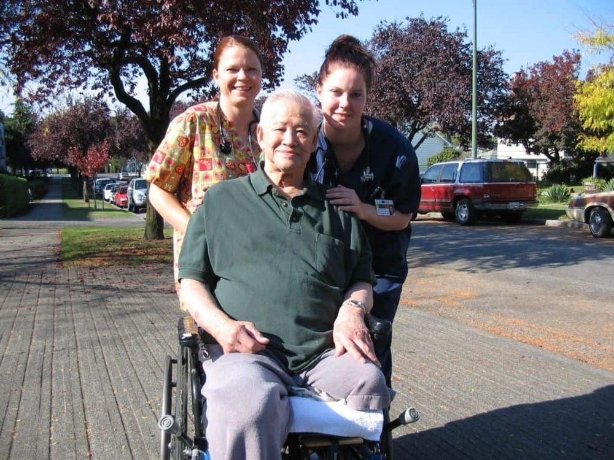

A few hours, a few days a week
Company, a proper meal, a shower done safely, a drive to an appointment at VGH. Often the version that keeps someone at home for years longer than expected.
We arrange caregivers and nurses for families right across Metro Vancouver — a few hours a week in Kitsilano, overnight cover in Burnaby, a first fortnight home in New Westminster, live-in support in West Vancouver. You tell us what the week actually looks like, and we build the schedule around it.

Not sure what you need yet? That is the normal place to start.
604 488 9323Caregiving is a local job. Bridge traffic, a narrow East Van street with no parking, a Burnaby tower with loading-bay rules, a Tsawwassen address that is forty minutes from anywhere — all of it decides whether a 7am shift actually starts at 7am. Below is every community we cover, grouped the way the health system groups them, because which health authority you fall under changes who you phone for a publicly funded assessment.

Publicly funded home support in these communities is assessed by Vancouver Coastal Health. What we do is private, so no assessment or waiting list is involved — but it is worth knowing which door is which.
East of Boundary Road the public side is run by Fraser Health. Same point: we are the private option, and we will tell you honestly if the public route would serve you better.
Not on the list? Ring anyway. The boundary of what we can staff properly moves with the week, and we would rather tell you straight than take a booking we cannot keep.
Most people call us in the middle of something — a fall, a discharge date, a parent who has quietly stopped cooking. You do not need to know which service you want. Describe the week and we will tell you what it would take to cover it.
Company, a proper meal, a shower done safely, a drive to an appointment at VGH. Often the version that keeps someone at home for years longer than expected.
For the households where nobody has slept properly in a month. A caregiver stays through the night so the family can stop listening for footsteps.
Someone in the home full time, with their own room. Usually where the alternative on the table is a care facility nobody in the family actually wants.
The first two weeks after a discharge are where most readmissions start. We cover them — medications, mobility, the follow-up appointments.
You have been doing it all yourself. We take some of the week so you can go back to being a daughter or a husband instead of staff.
Familiar routines, familiar faces, and a caregiver who understands that the same question at 4pm every day is not a problem to be fixed.
This is the question everybody wants to ask and nobody quite does. Here is the plain version, with no obligation attached to reading it.
Hourly private care in Metro Vancouver is not cheap, and any agency quoting you a rate before asking a single question about the person is quoting a number, not a plan. Cost depends on how many hours, what time of day, whether nights are waking or sleeping, and whether the care needs a nurse rather than a caregiver.
Call and describe the situation. We will give you a real figure for the week you have described, and if publicly funded support would serve you better, we will say so.
Discharge planners work fast, and families are often handed a date with two days' notice. We can usually have a caregiver in place for the first morning home — groceries in, the bed moved downstairs if the stairs are now a problem, and someone standing there when the taxi pulls up. These are the hospitals our clients most often come home from.
We are an independent private agency. We are not part of any hospital or health authority — we simply work with the families coming out of them.
For daytime hours across most of the region, often within 24 to 48 hours. Overnight and live-in placements take a little longer because matching the person matters more than filling the slot. If you are working to a discharge date, tell us the date on the first call.
Yes, most agencies have one, and we will tell you ours plainly on the phone rather than burying it in a contract. It exists because a caregiver crossing the city for a 45-minute visit is not a job anyone will keep.
That is the aim, and it is the single biggest thing that makes home care work — particularly with memory loss. Holidays and illness happen, but consistency is the plan, not the exception.
Vancouver, North and West Vancouver, Richmond, Burnaby, New Westminster, Coquitlam, Port Coquitlam, Port Moody, Delta, Surrey, White Rock, Langley, Maple Ridge, Pitt Meadows and Mission. If your address sits at the edge of that, say so on the first call — we would rather be honest about staffing than promise and then reschedule you.
That is completely normal. Post-surgery cover, a family carer going away for two weeks, a difficult winter — short arrangements are a large part of what we do.
Fill this in and we will call you back. If you would rather just talk now, the phone is answered by a person, not a menu.
Home Care Vancouver and Home Care Nursing are run by the same team, on the same phone line.